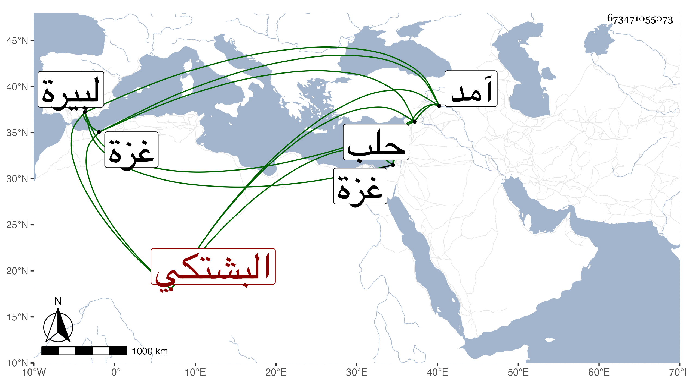

0902Sakhawi.DawLamic.ITO20230111-ara1.EIS1600.673471055073
Biography ID: 673471055073
648
قاسم زين الدين البشتكي . ولد بعد الثمانين وسبعمائة واشتغل بالعلم وقرب أهله وأحبهم وتقرب منهم مع وسوسة وتزوج ابنة الأشرف شعبان بن حسين بن قلاوون فاشتهر وقربه المؤيد بحيث ولاه نظر الجوالي وباشره أحسن مباشرة إلى أن أخذ الناصري بن البارزي في أبعاده عنه حتى غضب عليه بل وضربه وأعانه بطيشه وخفته على ذلك فانحطت مرتبته وافتقر وركبه الدين ، وداخل بعد هذا الأشرف فلم يحظ بطائل مع أنه سافر معه في سنة آمد إلى البيرة ثم رجع إلى حلب . مات بأرض يبنى من عمل غزة وكان توجهه لجهة هناك في يوم السبت ثامن رجب سنة أربع وأربعين وقد جاز الستين . ذكره شيخنا في أنبائه ، وقال المقريزي أنه كان جسيما سريا فخورا له ثراء واسع ومال جم ورثه وأفضال كثير وفضيلة ثم تردد لمجلس المؤيد واختص به مدة إلى أن تنكر له وضربه وشهره ، إلى أن قال : فالله يرحمه ولقد شاهدنا منه كرما جما وإفضالا زائدا ومروءة غزيرة ونعمة ضخمة .
